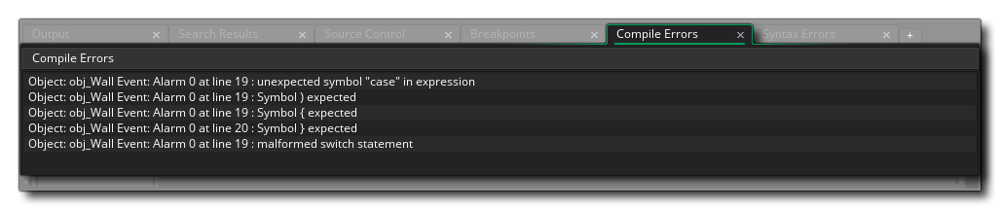

Lorsque vous créez votre jeu, il est très facile d'oublier de déclarer une variable ou de mal saisir une chaîne comme un vrai etc... Ces erreurs seront capturées par GameMaker Studio 2 pendant la compilation ou l'exécution du jeu et une fenêtre s'ouvrira avec le erreur donnée ainsi que l'endroit où l'erreur a été trouvée. Ces informations seront également affichées dans la sortie d'erreur du compilateur, comme indiqué ci-dessous: 
Vous pouvez cliquer sur l'une des lignes de texte affichées et vous serez redirigé directement vers l'objet ou le script qui a provoqué l'erreur. Vous pouvez ensuite utiliser les informations contenues dans le message pour localiser exactement l'objet ou le script. Une erreur s'est produite. Cependant, parfois ces erreurs peuvent sembler un peu énigmatiques, ainsi, ci-dessous vous pouvez trouver une liste complète de toutes les erreurs et une brève explication de ce qu'elles signifient:
No program to compile → Une erreur de compilation précédente a provoqué la création de l'arborescence d'analyse du compilateur et donc le compilateur n'a aucune donnée de programme à compiler Fatal Error while compiling [name] - bailing details below → Ce message signifie simplement qu'une erreur a été découverte mais que le compilateur ne peut pas placer quoi et où (si cela arrive régulièrement, vous pouvez contacter le support de YoYo Games et fournir les détails que la fenêtre de sortie du compilateur montre) Recursive macro expansion is not supported → Vous avez utilisé des macros récursives qui se réfèrent et se développent constamment Unable to find TextureGroup [group] → Cette erreur est généralement détectée uniquement lorsque vous tentez d'exécuter un fichier de projet mal formé (si cela se produit régulièrement, vous pouvez contacter le support de YoYo Games et fournir les détails que la fenêtre de sortie du compilateur affiche) Wrong to convert [value] to number → Vous avez essayé de convertir la valeur donnée, par exemple une chaîne, en un nombre Division by 0 → Vous avez essayé de diviser une valeur par 0 Invalid object id [object ID] used → Vous avez essayé d'accéder à un objet en utilisant une valeur d'ID incorrecte (voir ici pour plus d'informations sur les ID d'objet) Unclosed comment (/*) at tend of script → Vous avez créé un commentaire de script en utilisant /* [comment] */ mais n'ont pas fourni le tag de commentaire de fermeture (voir ici pour plus d'informations) Invalid token → Vous avez un caractère invalide dans votre code de jeu, ce qui peut arriver avec des caractères en langue étrangère ou Unicode Number [num] dans un format incorrect → Le nombre donné - indiqué dans l'erreur - n'est pas le bon format pour la fonction ou l'opération en cours, par exemple vous fournissez un entier quand un pointeur est requis (voir la section sur les types de données pour plus d'informations) Unexpected EOF encountered → Vous avez atteint la fin du fichier de manière inattendue lors de l'utilisation des fonctions de fichier
Unable to Not a string → Vous avez essayé d'utiliser "!" ( not ) sur une chaîne (pour plus d'informations sur les chaînes voir ici ) Unable to Negate a string → Vous avez essayé d'annuler une chaîne, par exemple " string = -string "(pour plus d'informations sur les chaînes voir ici )
Wrong number of arguments for function [function] → Vous avez fourni trop ou trop peu d'arguments pour la fonction donnée Failed to parse action_execute_script() - incorrect number of arguments received → L'action Execute Script a trop ou trop peu d'arguments pour le script donné étant appelé Function [function] expects n arguments, a provided → Une fonction a reçu le mauvais nombre d'arguments quand un certain nombre étaient attendus Unknown function [function] check to see if script is empty → Un script a été appelé que le compilateur ne reconnaît pas (cette erreur est généralement renvoyée par des références de ressources de script vides car le compilateur supprimera ces ressources lors de la compilation) Assignment of an empty value (function does not return anything?) → Vous avez essayé d'attribuer une valeur de retour à partir d'un script ou d'une fonction lorsque ce script ou cette fonction ne renvoie rien Unable to find function [function] → Vous avez appelé une fonction inconnue Calling a function that needs an instance and no instance is available → La fonction ou le script appelé sert à agir sur une instance, mais au moment de l'exécution aucune instance n'existe Calling a function that needs an other and no other is available → Vous avez utilisé le mot-clé other en dehors de l'événement de collision ou en dehors d'un with déclaration Argument naming error, n arguments but no reference found to a → Vous avez donné un certain nombre d'arguments à un script, mais vous ne parvenez pas à en référencer un dans le script, par exemple, votre script prend trois arguments mais vous n'utilisez que des arguments [0] et [2] (pour plus d'informations voir ici ) Cannot compare arguments → Vous avez essayé de comparer deux types d'arguments différents, comme une chaîne et un nombre réel (pour plus d'informations sur les scripts et les arguments, voir ici ) Unknown function or script [functions/script] → Le compilateur ne reconnaît pas la fonction ou le script appelé Cannot use resource name [resource] as it is not being exported → Vous avez essayé d'accéder à une ressource qui n'a pas été signalée dans le cadre du projet pour que la plate-forme soit compilée Cannot use function/script name for a variable, using [functions/script] → Vous avez essayé d'utiliser un nom de fonction ou un nom de script en tant que variable, par exemple string = "Hello World" Cannot use an argument outside a script → Le construit dans argument les variables ne peuvent être utilisées qu'à l'intérieur d'un script mais vous avez essayé de les utiliser ailleurs (pour plus d'informations sur les scripts et les arguments, voir ici ) No references to argument[num] but references argument[num] → Vous utilisez une référence à un argument qui n'existe pas mais qui pourrait correspondre à un autre argument (pour plus d'informations sur les scripts et les arguments, voir ici ) Incorrect number of arguments for accessor → Vous avez fourni le mauvais nombre d'arguments lors de l'utilisation d'un accesseur (pour plus d'informations sur les accesseurs, voir ici ) Wrong type of arguments for /
Wrong type of arguments for div
Wrong type of arguments for mod
Wrong type of arguments for +
Wrong type of arguments for -
Wrong type of arguments for &&
Wrong type of arguments for ||
Wrong type of arguments for ||
Wrong type of arguments for &
Wrong type of arguments for |
Wrong type of arguments for ^
Wrong type of arguments for <<
Wrong type of arguments for >>→ Vous avez fourni le mauvais type d'argument pour l'expression en cours d'évaluation (pour plus d'informations sur les expressions, voir ici )
Using uninitialised variable [var] → Vous avez essayé d'utiliser la variable nommée avant son initialisation (pour plus d'informations sur les variables, voir ici ) Variable [var] is write-only → Vous avez essayé de changer la variable nommée quand elle ne peut pas être changée (pour plus d'informations sur les variables, voir ici ) Unable to find variable named [var] → La variable nommée ne peut pas être trouvée dans la compilation en cours (pour plus d'informations sur les variables, voir ici ) Malformed variable reference → Vous avez essayé de référencer une variable dans le mauvais sens (pour plus d'informations sur les variables, voir ici ) Trying to set a read only variable [var] → Vous avez essayé de définir une variable en lecture seule (pour plus d'informations sur les variables, voir ici ) Cannot redeclare a built in variable → Vous avez essayé de déclarer une variable locale en utilisant le même nom que l'une des variables intégrées (pour plus d'informations sur les variables, voir ici ) Cannot use resource name for a variable → Vous avez utilisé le même nom qu'une ressource de l'arbre des ressources en tant que variable locale (pour plus d'informations sur les variables, voir ici ) [Variable] is read-only → Vous avez essayé d'utiliser une variable signalée comme étant en lecture seule (pour plus d'informations sur les variables, voir ici )
Cannot set a constant [constante] à une valeur → Vous avez essayé de définir une constante à une valeur différente Constant is invalid here → Vous avez essayé d'utiliser une constante quelque part qui n'est pas valide pour le code en cours d'exécution Cannot assign to [var] - c'est une constante → Vous avez essayé d'attribuer une nouvelle valeur à la constante nommée
Array index should not be negative → Vous avez essayé d'accéder, de créer ou de définir une valeur de tableau à l'aide d'un index de tableau négatif (pour plus d'informations sur les tableaux, voir ici ) Only 1 or 2 dimensional arrays are supported → Vous avez essayé de créer un tableau qui a plus de 2 dimensions ( GameMaker Studio 2 ne possède que des tableaux 1D et 2D - pour plus d'informations sur les tableaux, voir ici )
Malformed Conditional operator → Vous avez utilisé un opérateur conditionnel (ternaire) erroné ou if déclaration, et non le format [condition] ? [expression1] : [expression2]; (pour plus d'informations sur if et opérateurs ternaires voir ici ) If requires a then statement → Vous avez écrit un if déclaration et expression à évaluer, mais pas donné then partie à exécuter (pour plus d'informations sur if voir ici ) malformed assignment statement → Dans le code, vous utilisez un opérateur d'affectation incorrect (pour plus d'informations sur les affectations voir ici ) Malformed if statement
Malformed repeat statement
Malformed while statement
Malformed do statement
Malformed for statement
Malformed with statement
Malformed switch statement
Malformed break statement
Malformed continue statement
Malformed exit statement→ La structure de l'instruction donnée est incorrecte. Pour des détails spécifiques, veuillez consulter la section appropriée ici: GML Overview Malformed post inc or dec statement → Vous avez essayé d'utiliser [var]++ ou [var]-- d'une manière illégale (pour plus d'informations sur ++ / - voir ici ) Malformed pre inc or dec statement → Vous avez essayé d'utiliser ++[var] ou --[var] d'une manière illégale (pour plus d'informations sur ++ / - voir ici ) Malformed global gml_pragma → Vous avez créé une mauvaise chaîne globale lors de l'utilisation gml_pragma (pour plus d'informations sur gml_pragma voir ici ) Malformed PNGCrush gml_pragma → Vous avez créé une mauvaise commande de chaîne pour PNGCrush lorsque vous utilisez gml_pragma (pour plus d'informations sur gml_pragma voir ici ) Malformed Texgroup.Scale gml_pragma → Vous avez créé une mauvaise chaîne globale lors de l'utilisation gml_pragma (pour plus d'informations sur gml_pragma voir ici )
Default cannot be used multiple times in a switch → Dans ton switch déclaration que vous avez définie default: plus d'une fois (pour plus d'informations sur switch voir ici ) Clause expression type mismatch (clause expressions should all be the same type) → Dans ton switch vous vérifiez deux constantes différentes case types, par exemple une chaîne dans un cas et un entier dans un autre (pour plus d'informations sur switch voir ici ) Case argument should be a constant → Vous avez essayé d'utiliser une valeur qui n'évalue pas à une constante dans l'un de vos switch cas (pour plus d'informations sur switch voir ici ) Statement in a switch MUST appear after case or default → Vous avez ajouté une déclaration à un switch en dehors d'un soit case: ou default: appel (pour plus d'informations sur switch voir ici ) Duplicate case statement found / original here → Vous avez utilisé le même case constante dans deux endroits différents dans un switch (Notez que le commentaire "original ici" sera sur une autre ligne et peut être cliqué pour montrer l'original case:, et vous pouvez trouver plus d'informations sur switch ici )
No return value from expression (does expression have a return value?) → Vous avez essayé d'attribuer une valeur de retour d'une expression à une variable lorsque l'expression ne renvoie rien (pour plus d'informations sur les expressions, voir ici ) Expecting expression after the '.' → Vous avez utilisé la notation de point (".") Par erreur et n'a pas ajouté une expression après les mots correctement (pour plus d'informations sur les expressions, voir ici ) Unexpected symbol [symbole] dans l'expression → L'expression utilise un symbole qui ne fait pas partie du jeu de symboles d'expression accepté - le symbole en question sera affiché (pour plus d'informations sur les expressions, voir ici )
Unknown Pre operator → Vous avez essayé d'utiliser un symbole en tant que pré-opérateur lorsque ce symbole n'est pas autorisé, par exemple **[var] ou >>[var] - seulement ++ et -- sont acceptables (pour plus d'informations sur ++ / - voir ici ) Unknown Post operator → Vous avez essayé d'utiliser un symbole en tant que post-opérateur lorsque ce symbole n'est pas autorisé, par exemple [var]** ou [var]>> - seulement ++ et -- sont acceptables (pour plus d'informations sur ++ / - voir ici ) Unknown pragma [chaîne gml_pragma] → Vous avez utilisé une chaîne pragma inconnue du compilateur (pour plus d'informations sur gml_pragma voir ici ) Unknown unary operator → Vous avez essayé d'utiliser un symbole inconnu comme opérateur unaire (voir ici pour les symboles acceptés) Unknown binary operator → Vous avez essayé d'utiliser un symbole inconnu en tant qu'opérateur binaire (voir ici pour les symboles acceptés) Unknown operator [opérateur] → Vous avez essayé d'utiliser un symbole inconnu en tant qu'opérateur (le symbole apparaîtra dans l'erreur, et pour une liste de symboles acceptés, voir ici )
Break used without context → Tu n'as pas utilisé break dans un switch ou une boucle ou toute autre structure autorisée (voir ici pour plus d'informations sur break ) Continue used without context → Tu n'as pas utilisé continue dans le bon contexte (voir ici pour plus d'informations sur continue ) continue statement is not allowed at this point → Vous avez utilisé continue dans une partie de votre code où il n'est pas autorisé (voir ici pour plus d'informations sur continue )
enum num is invalid → Le numéro d'enum est invalide pour l'énumération (voir ici pour plus d'informations sur Enums) malformed enum → Vous n'avez pas créé l'enmu correctement (voir ici pour plus d'informations sur Enums) enum [enum] a déjà été défini → Vous avez essayé de définir un enmum en utilisant le même nom qu'un autre précédemment défini (voir ici pour plus d'informations sur Enums) malformed enum entry → L'enum a une entrée invalide (voir ici pour plus d'informations sur Enums) enum expression must be an integer constant → L'entrée enmu n'évalue pas comme une constante entière (voir ici pour plus d'informations sur Enums) enum reference [clé] n'existe pas dans [enum] → Vous avez essayé de référencer une entrée enum en utilisant une clé qui n'a pas encore été définie pour cette énumération (voir ici pour plus d'informations sur Enums)
Symbol ( expected
Symbol ) expected
Symbol , or ) expected
Symbol { expected
Symbol } expected
Symbol , or } expected
Symbol : expected
Symbol ; expected
Symbol [ expected
symbol ] expected
Symbol , or ] expected→ Vous n'avez pas utilisé un symbole requis lors de l'écriture de votre code (voir la section sur les expressions ou sur les fonctionnalités de langue pour plus d'informations) Expected id or string → Vous avez utilisé une valeur qui n'est ni un ID de calque ni un nom de calque - en tant que chaîne - dans l'une des fonctions de calque keyword Until expected → Vous avez créé un do... until boucle, mais négligé de fournir un until expression (voir ici pour plus d'informations sur do... until ) Function name expected → Vous avez utilisé autre chose qu'un nom de fonction dans votre code où une fonction devrait aller (voir ici pour plus d'informations sur l'utilisation des fonctions) variable name expected → Vous avez fourni un nom qui n'est pas un nom de variable où l'on est attendu (voir ici pour plus d'informations sur les variables) Assignment operator expected → Vous avez créé une affectation qui attend un opérateur mais aucune n'a été fournie (voir ici pour plus d'informations sur l'attribution de valeurs)
Android ARM ToolChain directory [dir] n'existe pas → Le lien donné dans Android préférences Android pour la chaîne d'outils ARM est incorrect et n'existe pas. Android MIPS ToolChain directory [dir] n'existe pas → Le lien donné dans Android Préférences Android pour la chaîne d'outils MIPS est incorrect et n'existe pas. Android x86 ToolChain directory [dir] n'existe pas → Le lien donné dans Android préférences Android pour la chaîne d'outils x86 est incorrect et n'existe pas. Android NDK directory [dir] n'existe pas → Le lien donné dans Android préférences Android pour Android NDK est incorrect et n'existe pas.